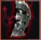
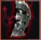

Заточка предметов в Black Desert online.
Чтобы заточить предмет, призовите Черного духа и нажмите кнопку Усиление. Нажмите правой кнопкой мыши на предмет и выберите пункт Усилить.
Разумеется, что для усиления брони и оружия у Вас в сумке должны находиться соответствующие Черные камни:
| Чёрный камень(оружие) | |
| Чёрный камень(броня) | |
| Чёрный камень чар(оружие) для заточки больше +15 | |
| Чёрный камень чар(броня) для заточки больше +15 |
Чтобы избавиться от заточки, обратитесь к кузнецу и нажмите Извлечение - Извлечение черных камней. Нажмите правой кнопкой мыши на предмет и выберите пункт Извлечь. Предмет будет уничтожен, однако вы получите обратно свои черные камни. Например, если вы извлечете камни из оружия с заточкой +8, оно исчезнет, а вы получите 8 камней.
Учтите, что после безопасного уровня заточки, успех каждой следующей заточки будет значительно снижаться, поэтому перед заточкой ценной вещи на высокий уровень, сначала попробуйте набить фэйлы на дешевой бижутерии или дешевой броне (лучший способ).
У бижутерии нет безопасного режима заточки и для её усиления вам нужно иметь второй экземпляр этого предмета(любого уровня усиления). В случае неудачи будут уничтожены оба предмета, но при успехе будет уничтожен только второй предмет.
Для того, чтобы заточить экипировку на 16 и выше, Вам не подойдут обычные черные камни, которые использовались при заточке до 15. Вам понадобятся Черные камни чар, которые можно купить на аукционе или скрафтить самостоятельно. Крафтятся такие камни нагреванием соответствующих ингредиентов:
Черный камень чар (оружие):
Черный камень чар (броня):
Заостренный кусочек черного кристалла и кусок твердого черного кристалла добывается ТОЛЬКО с помощью собирательства, в том числе и на огороде.
Заточка на 16 и выше отличается тем, что в случае неудачи, Вы потеряете не только 10 прочности предмета, но можете потерять и уровень проточки на 1. Например, если Вы точитесь с +16 до + 17, в случае неудачи, Вы можете потерять 10 прочности и Ваш предмет может стать +15, то есть потерять один уровень проточки.
Примерное количество фэйлов для успешной проточки:
Внимание! Эти значения не гарантирую 100% результат, а лишь гарантируют успешную заточку с большой вероятностью успеха.
При неудачной заточке максимальная прочность предмета уменьшается на 5. Для восстановления прочности понадобится второй такой же предмет. Отправляйтесь к кузнецу и нажмите Починка - Восстановление максимальной прочности. Положите предмет, который необходимо отремонтировать, и положите его в соответствующую ячейку. Предмет, который будет использоваться для ремонта, необходимо поместить в ячейку Материалы. Для подтверждения нажмите кнопку Восстановить максимальную прочность. Предмет получит +10 к прочности.
Кроме того, предметы можно ремонтировать с помощью фрагментов воспоминаний. Каждый фрагмент дает предмету +1 к прочности.